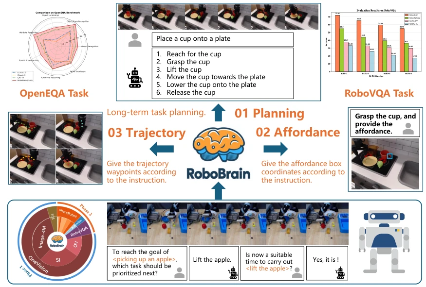
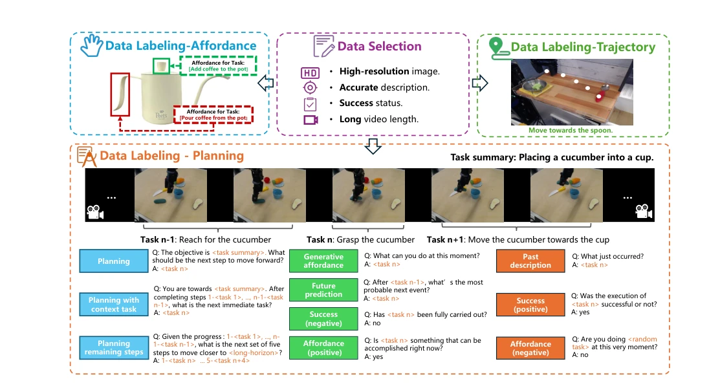
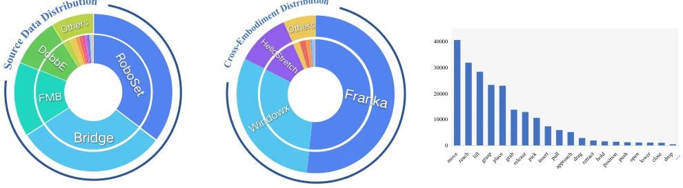
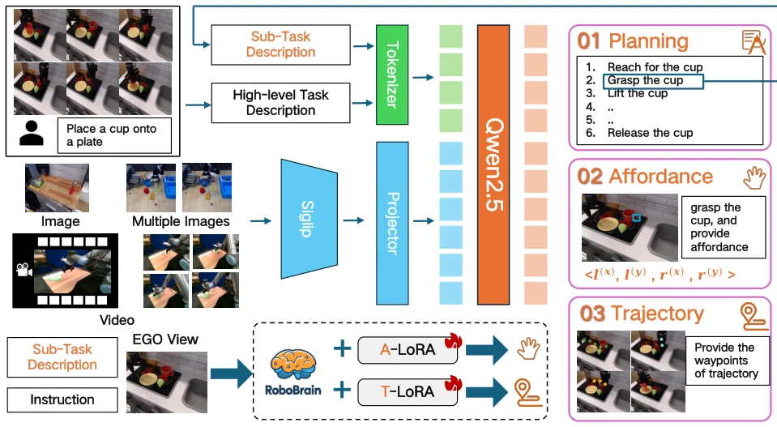
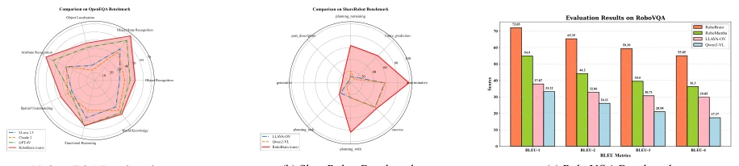
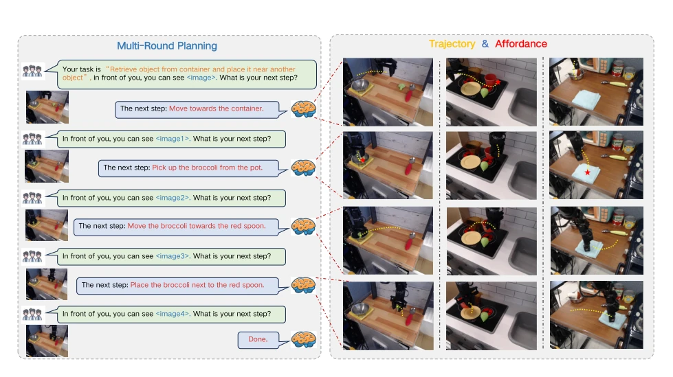
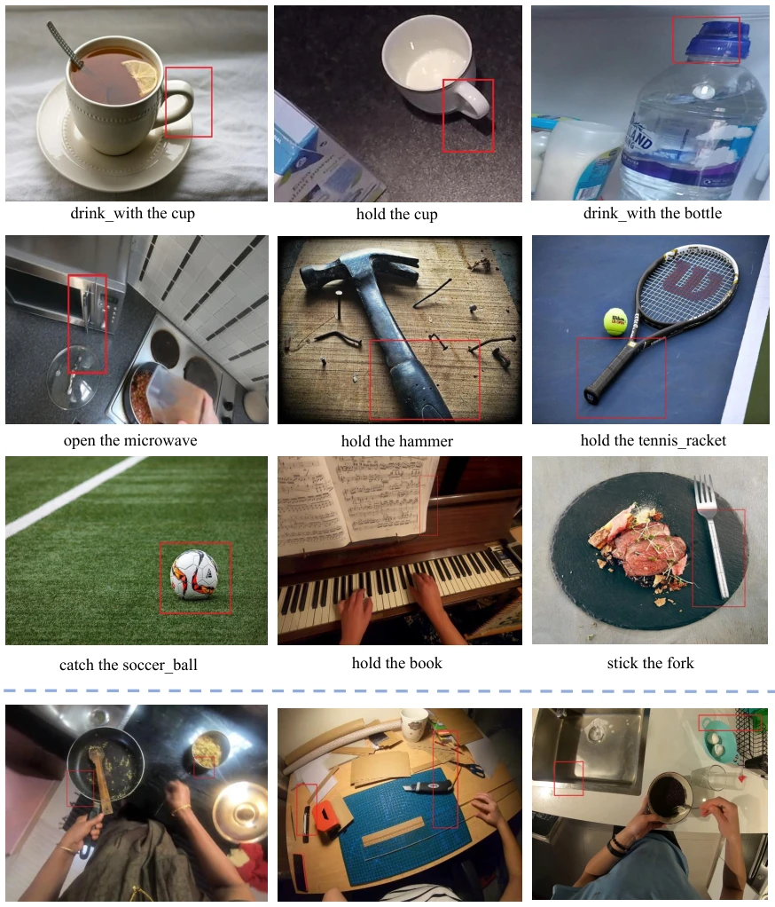
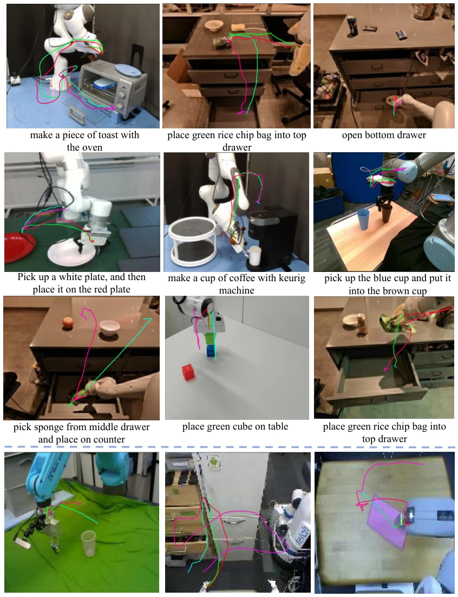
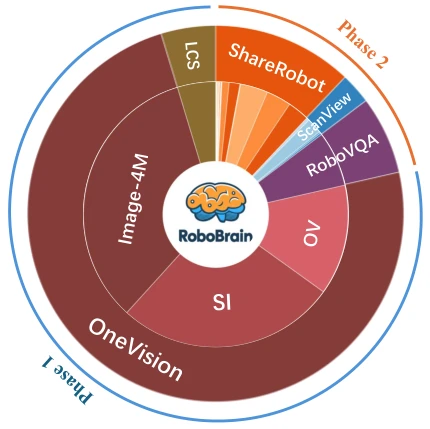
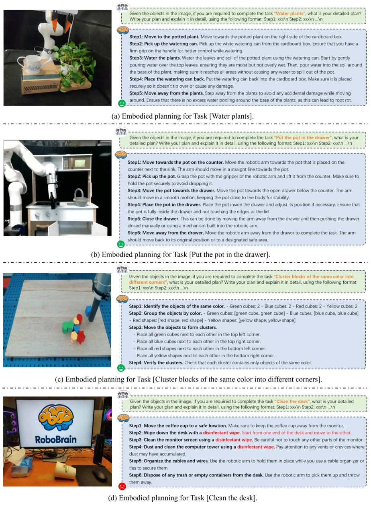

This RoboBrain attempts to unify the robot "brain" using MLLM, mapping from abstract instructions to specific actions. Although touted as a Unified Brain, it is essentially an LLaVA wrapper, augmented with LoRA fine-tuning for specific tasks. On the data side, it mined from Open X-Embodiment to create the ShareRobot dataset, with fine-grained annotations covering 12 robot embodiments. Results indeed outperformed on benchmarks like RoboVQA, but it is still far from truly handling complex physical interactions; for instance, failure cases shown in Figure 10 exposed spatial perception shortcomings, especially in noisy environments. However, integrating planning, grasping, and trajectory prediction into a single model is noteworthy, adding at least a bit of "thinking" process compared to pure VLA, making it suitable for foundation model research.
Existing MLLMs perform poorly on robot long-horizon manipulation tasks, mainly lacking three aspects: planning capability (task decomposition), Affordance perception (identifying interactable regions), and trajectory prediction (path anticipation). For example, RT-H [6] and RoboMamba [50] can generate actions but lack mechanisms to execute complex atomic tasks, making them difficult to cope with long-horizon tasks. Existing datasets such as Open X-Embodiment [66] lack fine-grained annotations, causing models to struggle to transition from abstract instructions to concrete execution and unable to accurately locate grasp points. This paper aims to address this gap by enhancing the robot brain through high-quality data and multimodal training, enabling the model to not only "speak" but also "act", bridging the gap from abstract to concrete.

Figure 1. Overview of RoboBrain. RoboBrain consists of three key robotic capabilities: planning capability, affordance perception, and trajectory prediction. RoboBrain outperforms previous MLLMs in robotics tasks. The bottom part shows the composition of RoboBrain’s training data and provides a specific example of visual question answering from our proposed ShareRobot. Best viewed on screen.
The overall process is divided into two steps: first create data, then train the model. On the data side, ShareRobot filters 50,000+ instances from Open X-Embodiment [66], manually annotates planning, affordance boxes, and trajectory points, generating 1,000,000+ QA pairs, covering 107 atomic tasks. On the model side, based on the LLaVA [48] architecture, the visual encoder uses SigLIP [92], and the LLM uses Qwen2.5-7B [80]. Training is divided into two phases: Phase 1 performs general OneVision pretraining to lay the foundation; Phase 2 focuses on robot-specific tasks, Stage 3 mixes robot data for planning, Stage 4 uses A-LoRA and T-LoRA to fine-tune affordance and trajectory prediction. This design allows the model to understand long videos and output specific coordinates, while mitigating catastrophic forgetting through multi-stage training, achieving the conversion from abstract instructions to specific actions.

Figure 2. The generation procession of our ShareRobot dataset. Our dataset labels multi-dimensional information, including task planning, object affordance, and end-effector trajectories. The task planning is first annotated by atomic tasks and then augmented by constructing question-answer pairs. The affordance and trajectory are labeled on the images according to the specific instructions.

Figure 3. The diversity of our ShareRobot dataset. Our dataset involves (a) 23 original datasets, (b) 12 embodiments and (c) 107 types of atomic tasks. The distribution of the top 20 most frequent atomic actions within our ShareRobot dataset is presented in (c).

Figure 4. The pipeline of our RoboBrain. The images, multiple images, and videos are sent into our model to pre-train a foundation robotic brain. Besides, we fine-tune the RoboBrain via A-LoRA and T-LoRA to develop affordance and trajectory skills. In practical applications, the model first generates detailed plans, and then splits it into sub-task descriptions to execute specific robotic tasks.
Evaluated on RoboVQA, OpenEQA, and ShareRobot test sets. Baselines include GPT-4V [2], LLaVA-1.5 [48], RoboMamba [50], etc. Planning tasks are scored using BLEU and GPT-4o, Affordance using AP, and Trajectory using DFD/HD/RMSE. RoboBrain is significantly superior to baselines on OpenEQA and ShareRobot, with BLEU-4 exceeding the second place by 18.75 on RoboVQA. Affordance AP reaches 27.1%, which is 14.6 higher than Qwen2-VL [86]. Ablation experiments show that adding Start Points and Spec Token can significantly reduce trajectory error, proving the effectiveness of fine-grained annotations. Visualization demonstrates multi-turn planning capability, but also exposes failure cases in complex scenarios.

Figure 5. The performance of our model RoboBrain on the OpenEQA, ShareRobot, and RoboVQA benchmarks. RoboBrain surpassed all baseline models, achieving state-of-the-art results.

Figure 6. This visualization illustrates that RoboBrain can interpret human instructions and visual images to generate action plans and assessments based on real-time image feedback. Furthermore, it predicts trajectories for each step and identifies corresponding affordances.

Figure 9. Additional visualizations of diverse affordance areas. The text below each subfigure indicates the task instructions, while the red bounding boxes represent the affordance areas predicted by the RoboBrain model. The visualizations in the first three rows demonstrate that our RoboBrain model effectively identifies reasonable affordance areas based on human instructions and visual information. The fourth row presents several failure cases, which may stem from the model’s lack of ability to perceive and localize in noisy environments. This limitation could be attributed to the absence of such scenarios in the training data used during Stage 4. The complete prompt provided to RoboBrain is: ”You are a Franka robot using joint control. The task is $TASK. Please predict all possible aff

Figure 10. Additional visualizations of diverse 2D trajectories. The red-to-purple gradient curves represent the ground truth, while the green-to-blue gradient curves indicate the predicted trajectories. The visualizations in the first two rows demonstrate that our RoboBrain model effectively generates end-effector manipulation curves based on the robot’s observations and task instructions. The third row shows that RoboBrain is not merely fitting trajectories but also exhibits the ability to generate more reasonable and feasible curves. The fourth row presents some failure cases, which stem from a lack of spatial awareness and world knowledge. These limitations result in an inability to accurately localize the objects involved in interactions, account for physical constraints, and adapt to
其他图片Other Figures

Figure 7. The distribution of the entire training dataset.

Figure 8. Additional embodied planning of RoboBrain. (a)∼(c) show some good cases of RoboBrain’s embodied planning, while (d) shows its bad case. More detailed analysis can be found in Sec.D.1.